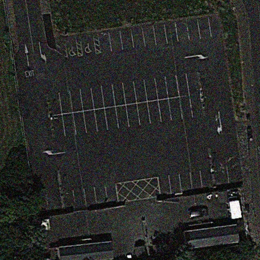
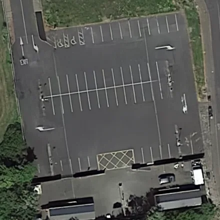

RIOTU Lab · Prince Sultan University
Dr. Anas M. Ali
Computer vision researcher
I develop generative and transformer-based methods for image restoration, remote sensing, medical imaging, and multimodal systems.
Open to postdoctoral and AI research opportunities
Prince Sultan University Riyadh, Saudi Arabia
55Research outputs
1,650Citations
27h-index
34i10-index
Google Scholar · updated October 2026
Research Assistant
Robotics & Internet-of-Things Lab, Prince Sultan University, RiyadhSep 2022 – Present
- Develop generative, diffusion, transformer, and selective-state-space models for image restoration, remote sensing, and medical imaging.
- Co-supervise researchers, design reproducible evaluation pipelines, and contribute to Q1 publications and international benchmarks.
- Build multimodal robotic systems integrating ROS2, vision, and large language models.
- Teaching: Generative AI (CS489) and Digital Logic Design (CS175).
Lecturer & Teaching Assistant
Alexandria Higher Institute of Engineering and Technology2018–2022Delivered image processing, DSP, programming, and VLSI courses and laboratories while mentoring undergraduate researchers.
Assistant Lecturer (Part-time)
Egyptian Air Defense College2019–2022Taught Electromagnetic Waves I & II to second-year engineering students.
Ph.D., Electronics & Communications Engineering
Menoufia University, Egypt2023–2026Dissertation: Optimized Algorithms for Multimedia Restoration in Computer Vision Applications.
M.Sc., Electronics & Communications Engineering
Menoufia University, Egypt2019–2021Deep-learning techniques for efficient medical-image super-resolution.
B.Sc., Electronics & Communications Engineering
AIET, Egypt2011–2016Communications, signal processing, electronics, and computing.
DG-GSM
Dual-branch gated selective modulation for nighttime remote-sensing enhancement and object detection.
Low-light enhancement · Remote sensing
Project and code ↗

Low-light input
DG-GSM output
Source comparison
Multi-attention grid Vision Transformer for efficient, high-fidelity remote-sensing super-resolution.
Vision Transformers • Super-resolution
SSVA
Self-scanned visual attention for enhanced mask-free shadow removal under complex illumination.
Expert Systems with Applications • 2025
DM–AHR
Self-supervised conditional diffusion for hair-artifact removal and improved dermoscopic diagnosis.
Cancers • Medical imaging
Dehazing-DiffGAN
Sequential diffusion and GAN fusion for high-fidelity dehazing of remote-sensing imagery.
IEEE TGRS • 2025
Prompting Robotic Modalities
A structured architecture that centralizes language models across sensing and control modalities.
FGCS • Multimodal AI & robotics
Night Photography Rendering ChallengeThe Prince Sultan University team placed third in both the objective and perceptual evaluations.
ROSHN Hackathon · 2nd place
RIOTU Lab, Prince Sultan UniversityRecognized for an AI-driven solution in a regional innovation challenge.
Registered Software Copyright
Saudi Authority for Intellectual PropertyDual-Branch Attention Network for Dynamic Illumination Enhancement in Nighttime Images.
SDAIA Scientific Contribution Award
Saudi Data and AI AuthorityRecognition for scientific contributions in artificial intelligence.
AI & Vision Models
Diffusion ModelsVision TransformersGANsState-Space ModelsSelf-Supervised LearningLLMs
Engineering
PythonPyTorchTensorFlowC++ROS2DockerLinux & HPCGit
Application Domains
Image RestorationRemote SensingMedical ImagingSuper-ResolutionLow-Light EnhancementDehazingShadow Removal